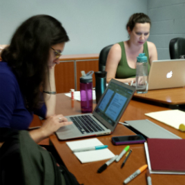
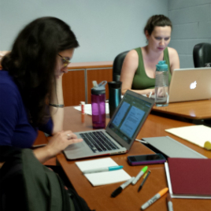

Happening Now
We’re currently seeking public and private swimming pools for our upcoming production of Roman Candle Summer. Contact us to suggest a location!
In Development
Save the Date! Third Council of Lyon Public Reading April 30 at the Alliance Theatre.
Developed through the Reiser Atlanta Artists Lab.
Production History
Since 2014, we’ve partnered with Atlanta-area organizations to create site-specific plays for a wide range of audiences - some experiencing theatre for the first time.
 
